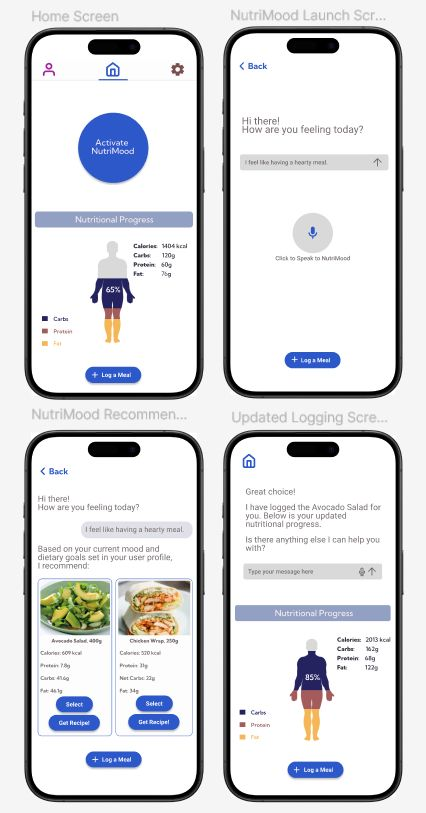

NutriMood
A nutrition tracker you talk to. Say how you feel, pick a meal, and a body-shaped progress bar fills as your day adds up.
over three rounds
tested head to head
final prototype
Tracking food takes too long, so people stop.
People want to eat better, and logging every meal by hand gets in the way. The brief: design a phone interface that removes the weighing, searching and typing, for fitness enthusiasts, people managing a health condition, and anyone after a balanced diet.
of Americans said they were actively trying to follow a healthier diet (IFIC Food & Health Survey, 2022, as cited in the project report).
of users abandon diet-tracking apps because manual entry is complex and slow (figure cited in the project report).
of our own survey respondents named the time it takes as their main difficulty with tracking.
Three ways of listening before drawing anything.
A survey of 26 people, a heuristic evaluation of MyFitnessPal against simplicity, consistency, flexibility and feedback, and a thematic read of about 100 recent reviews each for MyFitnessPal and a best-selling kitchen scale.
Weight is the hard part.
Scanning identifies a food fast, yet the user still has to guess how much of it is on the plate. A barcode returns the whole packet.
Scales sit in the drawer.
65.4% of respondents rarely or never use a kitchen scale. Precise measurement has to arrive without extra effort.
Clutter costs loyalty.
Long-time users were upset by a crowded interface and by features, such as the barcode scanner, moving behind a paywall.
Four trackers, five variables.
Each profile is a position on five variables: experience, seriousness, motivation, technical literacy and how often they open the app. Pick one to see what the interface owes that person.
Many ideas in, three concepts out.
Ideas were generated individually first, then shared round-robin, 20 seconds per idea with no interruptions, so the loudest voice could not steer the group. Needfinding results and the user profiles decided what survived.
Testers liked
Testers struggled with
23 people rated all three.
Participants with nutrient-tracking experience scored each prototype from 1 to 5. One-way ANOVA found the prototypes differed on every metric. Select a prototype to trace it through the scores.
Mean rating out of 5, n = 23.
- Intuitiveness p = 0.0456
- Ease of use p = 0.0123
- Satisfaction p = 0.0091
The assistant
Top score on every metric. Testers called the chat intuitive and the screens clean, and asked for more motivation and depth.
The silhouette
Standard progress bars worked but inspired nobody. A human figure that fills with calories and macros gives feedback people read at a glance.
NutriMood, second iteration
One flow: speak or type a mood, choose a recommended meal, see the figure update on the same screen.
Four screens, one conversation.
Built in Figma as a clickable high-fidelity prototype. Voice input and generative AI take the query; the interface handles the logging and shows the result where the user is already looking.

- Hands-free by default. Voice commands suit people who are cooking or find typing tedious.
- Everything in one place. Calories and the macro breakdown share one figure, so there is no second screen to visit.
- Consistent parts. The same home and back icons, colour scheme and colour-coded macros on every screen.
Every tester found it easy to use.
26 volunteers with an interest in nutrition tracking used the prototype, then rated it on a five-point agreement scale and described what they liked and what they would change.
The three features testers praised most, voice commands, the silhouette and the AI assistant, each answer a need found in the first round of research: less time, less typing, clearer feedback.
A cleaner interface for the functions some testers found hard to follow, more customisation and goal setting, photo recognition for logging, and links to water, fitness and smart-kitchen data.